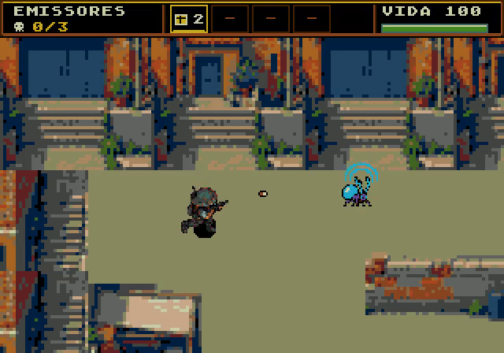

HISTÓRICO SUBSTITUÍDO — As aprovações abaixo foram retiradas. Consulte a reavaliação integral atual.
PLAGUEFALL / REVISÃO DE ARTE NO JOGOCorreções de composição visual
A reavaliação confirmou casas cortadas na fase 3. Sua aprovação visual foi retirada; 12 das 13 variações permanecem aceitáveis. Os testes técnicos continuam aprovados na mesma ROM e não detectam esses defeitos de composição.
12 / 13 variações aceitáveis nesta revisão manual · até três ciclos de correção.
Comparação entre a versão auditada e capturas reais da versão corrigida. Testes técnicos e julgamento visual são apresentados separadamente. As fases 1, 2A, 2B, 5, 13A e 16 são referências preservadas.
ROM verificada: ea9caca81c9baa64cd07d011f7b8ae234cb883b50a81c791fdcea179f23a558f
ROM para playtest ↗ · ROM da campanha ↗ · Resultados e controles ↗ · Pareceres completos ↗
Percorrer 2560 px com desvios e cobertura
3 · Rua ao galpão
Reprovada na reavaliação: casas cortadasCorreção
- Faixa de chão acima dos telhados removida; fundo discreto e fachadas com janelas, portas e coberturas coerentes.
- Cinco desvios principais alternados, incluindo o fim do percurso; carros e barricadas com silhuetas maiores.
- Porta industrial do destino extraída da imagem completa do interior 4, ligando os dois lugares.
- Igreja preservada pixel a pixel nos dois desfechos.
Revisão de composição
- Fragmentos de vizinhos nas bordas dos módulos: house-3.png mostra abertura parcial à esquerda; limites de corte não seguem o contorno de uma casa completa.
- Telhado e fachada recompostos de trechos diferentes: Um telhado comum recebe três fachadas distintas; divisórias laterais e altura do beiral não se conectam naturalmente.
- Cobertura repetida com emendas aparentes: O miolo16×16 repete dentro do telhado, criando linhas que não respeitam seu contorno/perspectiva.
- Enquadramento encobre o topo das construções: As casas começam em worldY72; a câmera acompanha o deslocamento vertical e o HUD ocupa a faixa superior. Há perda adicional de contexto arquitetônico durante os desvios.
Histórico dos ciclos
| Ciclo | Decisão | Motivo |
|---|
| 1 | Revisar | Detalhes em2px borravam fachadas ao lado da igreja nativa. |
| 2 | Revisar chegada | Percurso e igreja funcionam; galpão ainda parecia outra casa e sobrava uma borda vazia. |
| 3 | Aceitação retirada na reavaliação | A chegada industrial melhorou, mas a revisão deixou passar os cortes nas casas; fase continua reprovada. |
Eliminar 20 insetos
4 · Interior do galpão
Aceitável nesta revisão visual Antes · captura da ROM auditada
Antes · captura da ROM auditada Entrada real · porta e racks
Entrada real · porta e racks Parte sul com carrinho e perímetro
Parte sul com carrinho e perímetro Parte sul central · arquitetura ainda visível
Parte sul central · arquitetura ainda visívelCorreção
- Nova imagem inteira do galpão com materiais simples, porta industrial e prateleiras laterais contínuas.
- Piso de duas cores com juntas amplas e objetos sem retângulos de piso nas bordas.
- Colisão das prateleiras alinhada aos limites da área de caminhada; início enquadra a fachada interna.
- Perímetro sul usa faixas de revestimento industrial da própria imagem, sem novos tiles; limite de caminhada ajustado à parede.
Revisão de composição
- Porta, pilares, racks e fechamento sul mantêm o interior reconhecível em entrada e enquadramentos inferiores.
- Caixas e carrinho compartilham os materiais da sala; piso calmo e sem halos nos recortes.
- Colisões impedem atravessar prateleiras e o fechamento sul; toda área livre permanece conectada.
Histórico dos ciclos
| Ciclo | Decisão | Motivo |
|---|
| 1 | Rever extremo sul | Materiais e recortes resolvidos, mas o enquadramento inferior central ainda mostrava pouco da construção. |
| 2 | Aceitável | Fechamento sul reaproveita revestimento industrial e permanece visível mesmo fora das paredes laterais. |
Escolta 3072 px
6A · Esgotos
Aceitável nesta revisão visual Antes · captura da ROM auditada
Antes · captura da ROM auditada Entrada real · NTSC
Entrada real · NTSC Trecho central real · NTSC
Trecho central real · NTSC Chegada real · NTSC
Chegada real · NTSCCorreção
- Piso calmo e fundo escuro contínuo substituem a grade forte e as faixas repetidas.
- Drenagens, inspeção central e saída iluminada orientam a travessia.
Revisão de composição
- Pavimento contínuo e calmo, sem grade forte nem carimbo diagonal.
- Intervalos de parede e pequenas vertentes separam os arcos maiores.
- Marco central circular e escada iluminada com tecido na saída identificam progressão.
- Água azul legível sob as bordas de pedra, sem blocos pretos de transparência.
- Reuso de módulos arquitetônicos continua visível no panorama, por orçamento de tiles.
Histórico dos ciclos
| Ciclo | Decisão | Motivo |
|---|
| 1 | Rever | Repetição excessiva na parede e poucos marcos, apesar do piso mais limpo. |
| 2 | Rever 6B; demais candidatas aceitáveis | Portão legível; recortes de água e pilar prejudicavam o contato com a alvenaria. |
| 3 | Aceitável | Alvenaria, tubulação e estados dos portões conferidos no jogo; marcos de chegada visíveis. |
Escolta 3072 px;2 válvulas e 2 portões
6B · Esgotos sob pressão
Aceitável nesta revisão visual Antes · captura da ROM auditada
Antes · captura da ROM auditada Portão fechado e válvula conectada
Portão fechado e válvula conectada Passagem após romper o portão
Passagem após romper o portão Chegada após as duas estações
Chegada após as duas estaçõesCorreção
- Mesma base de materiais da 6A; alvenaria sólida nos suportes dos portões.
- Portão metálico com folha visível, rompimento e passagem livre; colisão 32×64 alinhada à arte.
- Volante rubro conectado à tubulação azul contínua, sem número sobreposto.
Revisão de composição
- Folha metálica diagonal forma porta real reconhecível sem número de objeto.
- A ruptura deixa passagem reconhecível; suportes permanentes e alvenaria mantêm contato com a passagem 32x64.
- Volante rubro e tubo azul contínuo3px ligam válvula à infraestrutura.
- Duas estações e a saída iluminada marcam os setores; mesmo piso/paleta 6A.
- A perspectiva diagonal simplifica a projeção da colisão retangular; rota e tiros foram testados nas duas estações.
Histórico dos ciclos
| Ciclo | Decisão | Motivo |
|---|
| 1 | Rever | Repetição excessiva na parede e poucos marcos, apesar do piso mais limpo. |
| 2 | Rever 6B; demais candidatas aceitáveis | Portão legível; recortes de água e pilar prejudicavam o contato com a alvenaria. |
| 3 | Aceitável | Alvenaria, tubulação e estados dos portões conferidos no jogo; marcos de chegada visíveis. |
Transportar 5 cargas
7 · Abrigo O Último Chão
Aceitável nesta revisão visual Antes · captura da ROM auditada
Antes · captura da ROM auditada Entrada real · NTSC · sem letras nos objetivos
Entrada real · NTSC · sem letras nos objetivos Entrega diante do depósito coberto
Entrega diante do depósito cobertoCorreção
- Piso calmo extraído da imagem completa; portas com contraste reduzido.
- Depósito coberto conectado à fachada; novo sólido testado pela frente acessível.
- Cargas claras com cruz vermelha; maleta coletada permanece vazia.
Revisão de composição
- Carga e entrega distinguíveis do inseto sem letras.
- Canopy e balcão formam destino arquitetônico; movimento de entrega e cinco coletas passaram.
Histórico dos ciclos
| Ciclo | Decisão | Motivo |
|---|
| 1 | Aceitável | Primeira extração do piso ainda tinha manchas; recorte limpo da própria imagem eliminou repetição. |
Eliminar 3 prioritários
8 · Transmissores
Aceitável nesta revisão visual Antes · captura da ROM auditada
Antes · captura da ROM auditada Entrada real · NTSC · sem letras nos objetivos
Entrada real · NTSC · sem letras nos objetivos
Emissão ativa · quadro do vídeo em 0,35 sCorreção
- Mesmo piso e arquitetura da favela preservam continuidade.
- Emissores roxos/ciano com arcos ativos distinguem prioritários dos inimigos comuns.
Revisão de composição
- Emissão ciano e silhueta distinta aparecem no vídeo sem números sobrepostos.
- Os três alvos usam HP e morte reais; objetivo e carga máxima passaram.
Histórico dos ciclos
| Ciclo | Decisão | Motivo |
|---|
| 1 | Aceitável | Piso limpo e emissores ativos passaram a separar função e combate. |
Percorrer 2560 px
9 · Caminho da fábrica
Aceitável nesta revisão visual Antes · captura da ROM auditada
Antes · captura da ROM auditada Entrada nas oficinas
Entrada nas oficinas Obstáculo com desvio real
Obstáculo com desvio real Aproximação do portão da fábrica
Aproximação do portão da fábricaCorreção
- Três setores: oficinas de tijolo, docas e tanques na aproximação da fábrica.
- Quatro obstáculos visíveis e sólidos interrompem a rota reta; desvios pelo norte e sul.
Revisão de composição
- Piso discreto separa personagens, projéteis e equipamentos.
- Arquitetura e marcos legíveis nas câmeras examinadas; reuso de peças dentro de cada setor permanece visível.
Histórico dos ciclos
| Ciclo | Decisão | Motivo |
|---|
| 1 | Rever | Piso pontilhado e parede com detalhes repetidos; orçamento de tiles excedido. |
| 2 | Aceitável | Materiais calmos, peças estruturais reutilizadas e objetivos reconhecíveis; colisões e estados exercitados. |
Destruir 10 ninhos
10 · Ovos na fábrica
Aceitável nesta revisão visual Antes · captura da ROM auditada
Antes · captura da ROM auditada Entrada real · ovos claros
Entrada real · ovos claros Fábrica visível na parte sul
Fábrica visível na parte sulCorreção
- Ninhos de ovos claros e agrupados se distinguem dos insetos móveis.
- Esteiras com corpo 160 px, máquinas e colunas mantêm contexto industrial no enquadramento sul.
Revisão de composição
- Piso discreto separa personagens, projéteis e equipamentos.
- Arquitetura e marcos legíveis nas câmeras examinadas; reuso de peças dentro de cada setor permanece visível.
Histórico dos ciclos
| Ciclo | Decisão | Motivo |
|---|
| 1 | Rever | Piso pontilhado e parede com detalhes repetidos; orçamento de tiles excedido. |
| 2 | Aceitável | Materiais calmos, peças estruturais reutilizadas e objetivos reconhecíveis; colisões e estados exercitados. |
Liberar 3 válvulas
11 · Fábrica aquecida
Aceitável nesta revisão visual Antes · captura da ROM auditada
Antes · captura da ROM auditada Válvula conectada à estação
Válvula conectada à estação Estado depois da liberação
Estado depois da liberaçãoCorreção
- Válvulas rubras ligadas a tubos, gabinetes e instalações reais da fábrica.
- Roda aberta e indicação de energia mostram progresso sem números sobre os objetivos.
Revisão de composição
- Piso discreto separa personagens, projéteis e equipamentos.
- Arquitetura e marcos legíveis nas câmeras examinadas; reuso de peças dentro de cada setor permanece visível.
Histórico dos ciclos
| Ciclo | Decisão | Motivo |
|---|
| 1 | Rever | Piso pontilhado e parede com detalhes repetidos; orçamento de tiles excedido. |
| 2 | Aceitável | Materiais calmos, peças estruturais reutilizadas e objetivos reconhecíveis; colisões e estados exercitados. |
Escolta 3072 px; morte permanente deDinorah
12 · Caminho ao sindicato
Aceitável nesta revisão visual Antes · captura da ROM auditada
Antes · captura da ROM auditada Entrada real · NTSC
Entrada real · NTSC Trecho central real · NTSC
Trecho central real · NTSC Chegada real · NTSC
Chegada real · NTSCCorreção
- Piso calmo sem carimbos alaranjados e céu escuro sem faixas artificiais.
- Oficinas, manutenção e prédio sindical branco marcam entrada, trecho central e destino.
Revisão de composição
- Removidas faixas gráficas atrás das oficinas, com céu escuro coeso.
- Piso cinza mantém os dois personagens legíveis.
- Baias abertas/fechadas, manutenção com reservatório e chegada sindical branca/bandeira criam três marcos.
- Prédio sindical permanece visível no enquadramento final inferior.
- Oficinas ainda reutilizam peças; não se afirma uma arquitetura única a cada tela.
Histórico dos ciclos
| Ciclo | Decisão | Motivo |
|---|
| 1 | Rever | Repetição excessiva na parede e poucos marcos, apesar do piso mais limpo. |
| 2 | Rever 6B; demais candidatas aceitáveis | Portão legível; recortes de água e pilar prejudicavam o contato com a alvenaria. |
| 3 | Aceitável | Alvenaria, tubulação e estados dos portões conferidos no jogo; marcos de chegada visíveis. |
Eliminar 45;Dinorah morta
13B · Sala do sindicato em luto
Aceitável nesta revisão visual Antes · captura da ROM auditada
Antes · captura da ROM auditada Entrada real · NTSC · sem letras nos objetivos
Entrada real · NTSC · sem letras nos objetivosCorreção
- Imagem inteira nova de memorial com retrato claro, faixa de luto e duas velas.
- Recorte globalmente quantizado em 1 px mantém leitura do rosto; restante da sala compartilhada é 2 px.
- Somente entrada 13B mudou para 280,176, enquadrando o memorial sem deslocar o guichê.
Revisão de composição
- Retrato e velas visíveis inteiros na câmera de entrada.
- 13A permanece pixel a pixel idêntica; salas mantêm os mesmos bancos/colisões.
Histórico dos ciclos
| Ciclo | Decisão | Motivo |
|---|
| 1 | Rever | Cadeira/bandana ainda pareciam adereço pequeno. |
| 2 | Aceitável | Retrato e velas claros; entrada diante do memorial resolveu o corte sem deformar arquitetura. |
Ligar 5 geradores
14 · Energia do estaleiro
Aceitável nesta revisão visual Antes · captura da ROM auditada
Antes · captura da ROM auditada Entrada real · NTSC · sem letras nos objetivos
Entrada real · NTSC · sem letras nos objetivos Conexões e estados das máquinas durante o percurso
Conexões e estados das máquinas durante o percursoCorreção
- Piso uniforme, estação e conduítes fazem parte da extração da imagem completa.
- Gabinetes azuis/claros têm mesma silhueta desligados e ligados.
- Conduítes com seção contínua 3 px substituem pontilhado claro.
Revisão de composição
- Máquinas ligadas se leem pelo painel iluminado sem números.
- Cinco aproximações e ativações reais com controle, colisão e rolagem passaram.
Histórico dos ciclos
| Ciclo | Decisão | Motivo |
|---|
| 1 | Rever | Conduítes finos pontilhados lembravam seleção de editor. |
| 2 | Aceitável | Seção uniforme extraída do próprio cano eliminou o pontilhado; revisão com gabinetes sobrepostos. |
Proteger 120 s
15 · Rádio de ignição
Aceitável nesta revisão visual Antes · captura da ROM auditada
Antes · captura da ROM auditada Entrada real · NTSC · sem letras nos objetivos
Entrada real · NTSC · sem letras nos objetivos Ignição real · combate pausado
Ignição real · combate pausado Câmera devolvida para retomar defesa
Câmera devolvida para retomar defesaCorreção
- Estação maior com mastro/antena dá foco ao console azul/ciano.
- Atlas de ignição próprio 15 mantém fase 16 intacta.
- Breve foco nos motores pausa combate/contador e devolve câmera antes retomar.
Revisão de composição
- Objeto protegido reconhecível sem letra R.
- Fogo sai claramente do motor; inimigo e projéteis ativos permanecem congelados durante a apresentação.
Histórico dos ciclos
| Ciclo | Decisão | Motivo |
|---|
| 1 | Rever | Nova estação e motor legíveis; conduítes precisavam perder pontilhado. |
| 2 | Aceitável | Foco real nos motores e retorno seguro validados em NTSC/PAL; contador mede 120 s ativos. |